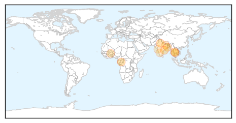

30 Day Trends
Web: 2 alerts, 1 warnings
Twitter: 3 alerts, 0 warnings
Top Articles:
- 0.965
- Researchers use Big Data to track the spread of dengue fever
- 0.965
- University of Queensland scientists close in on first dengue treatment
- 0.942
- Dengue toll rises, ban on rapid diagnostic kits likely
- 0.918
- UK to help set up disease surveillance system
- 0.852
- Declare health emergency in Agency: CPI(M)
- 0.836
- Cases of malaria, dengue have fallen in the city
- 0.776
- NCKU raises awareness on dengue prevention among international students
- 0.677
- Patna Commissioner directs PMC to conduct anti-dengue drive in affected areas
- 0.607
- NMTV – Vijay Chougule calls for a special meet to discuss raising scare of malaria & dengue
- 0.600
- Manipal University gets US CDC grant
- 0.525
- Pangasinan town notes increase in dengue, sore eyes cases
Top Tweets:
-
No tweets found for Sep 11, 2015
Web/News Articles

Tweets

Article Locations
Article Confidences